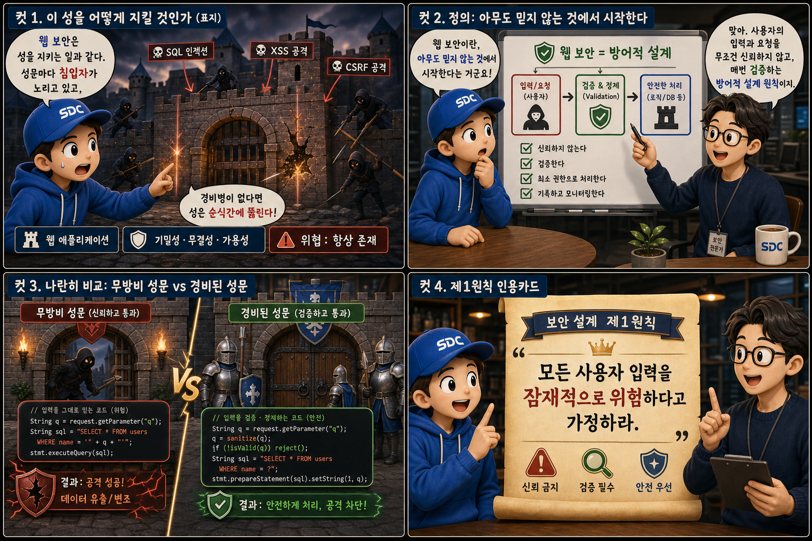
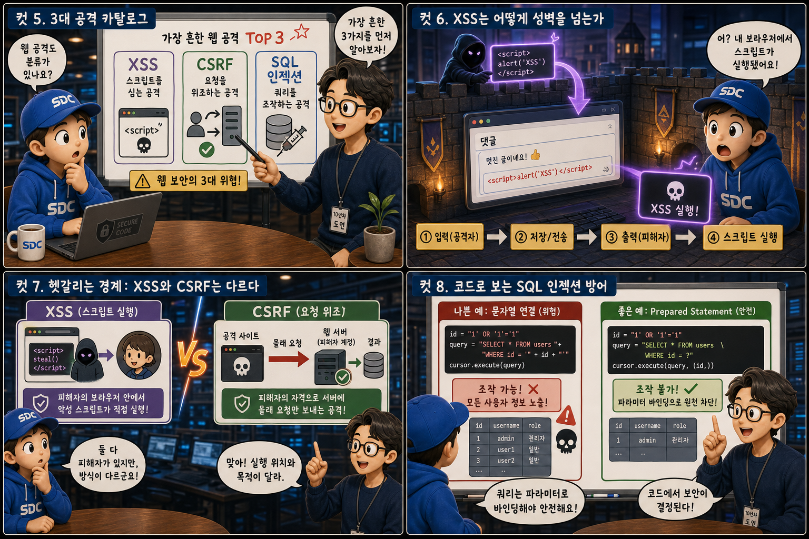
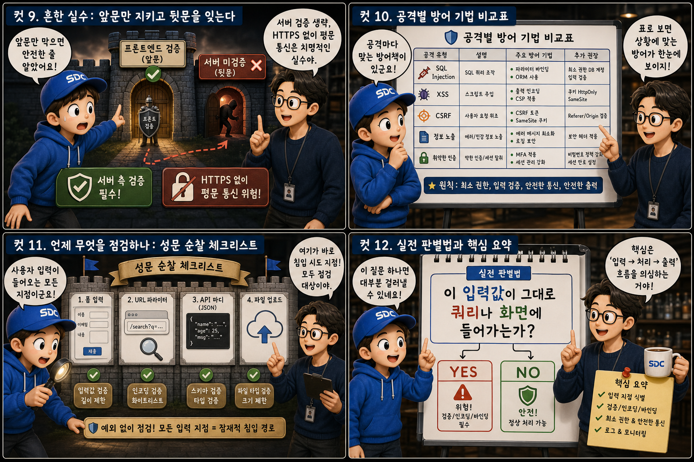

성벽과 경비 시스템에 비유해, 가장 흔한 세 가지 웹 공격과 방어 원리를 12컷으로 풀어봅니다.
AttackvsDefense
이 시리즈는 웹 애플리케이션이 가장 자주 마주치는 세 가지 공격 — XSS, CSRF, SQL 인젝션 — 이 실제로 어떻게 이뤄지고, 개발자가 이를 어떻게 막아야 하는지를 다룹니다. 웹 보안은 성을 지키는 일과 비슷합니다. 성문마다 침입자가 노리고 있고, 성문을 지키는 경비병이 없다면 성은 순식간에 뚫립니다. 사용자 입력을 받는 모든 지점이 성문이고, 그 성문을 지키는 검증 로직이 바로 경비병입니다.
PART 1 / 3 — 성벽과 경비의 기본 원칙 (컷 01–04)

fourcut-01 — 컷 01 ~ 04
컷 01
이 성을 어떻게 지킬 것인가
웹 보안은 성을 지키는 일과 같다. 성문마다 침입자가 노리고 있고, 경비병이 없다면 성은 순식간에 뚫린다.
이 시리즈는 웹 애플리케이션이 마주하는 가장 흔한 세 가지 공격, XSS와 CSRF와 SQL 인젝션이 어떻게 이뤄지는지, 그리고 개발자가 이를 어떻게 방어하는지를 다룹니다. 성벽에 정문이 있듯 웹 서비스에는 사용자 입력을 받는 지점이 있고, 그 지점을 지키는 경비병이 바로 검증 로직입니다. 경비가 허술하면 침입자는 정문으로 당당히 걸어 들어옵니다.
컷 02
정의: 아무도 믿지 않는 것에서 시작한다
웹 보안이란 사용자의 입력과 요청을 무조건 신뢰하지 않고, 매번 검증하는 방어적 설계 원칙이다.
웹 보안은 사용자가 입력하거나 서버로 보내는 모든 데이터를 잠재적으로 위험하다고 가정하고, 그것을 실제로 사용하기 전에 검증하고 정제하는 방어적 설계 원칙입니다. 여기서 핵심은 신뢰의 방향입니다. 서버는 클라이언트에서 온 어떤 값도 그 자체로 안전하다고 믿어서는 안 됩니다. 성문 통제소의 경비병이 편지 봉투를 하나하나 돋보기로 들여다보듯, 이 원칙 하나가 지금부터 다룰 모든 방어 기법의 출발점이 됩니다. never trust user input
컷 03
나란히 비교: 무방비 성문 vs 경비된 성문
입력을 그대로 믿고 통과시키는 코드와, 검증하고 정제한 뒤 통과시키는 코드는 결과가 완전히 다르다.
취약한 코드 — 그대로 출력
// 성문을 지키는 경비병이 없다
element.innerHTML = userInput; // 스크립트까지 그대로 실행됨
왼쪽처럼 사용자 입력을 innerHTML에 그대로 꽂아 넣으면 입력 안에 스크립트가 있어도 브라우저가 그대로 실행해 버립니다. 오른쪽처럼 textContent를 쓰거나 출력 시 이스케이프 처리를 하면 스크립트 태그는 실행되지 않고 순수한 텍스트로만 표시됩니다. 같은 데이터를 다루더라도 어떻게 처리하느냐에 따라 성문이 열려 있는 성과 지켜지는 성만큼의 차이가 생깁니다.
컷 04
제1원칙: 모든 입력은 위험하다고 가정하라
보안 설계의 가장 유명한 제1원칙은 모든 사용자 입력을 잠재적으로 위험하다고 가정하는 것이다.
ASSUMPTION
모든 사용자 입력은 위험하다고 가정한다
THEREFORE
서버에서 반드시 다시 검증한다
rule #1
보안 업계에서 가장 널리 통용되는 원칙은 ‘모든 입력을 신뢰하지 말라’입니다. 폼 필드, URL 파라미터, 쿠키, HTTP 헤더, 심지어 파일 업로드까지 클라이언트에서 서버로 전달되는 모든 값은 조작될 수 있다고 전제해야 합니다. 이 전제를 받아들이면 왜 클라이언트 측 검증만으로는 부족하고, 서버 측에서 반드시 다시 검증해야 하는지가 자연스럽게 설명됩니다.
PART 2 / 3 — 세 가지 공격과 방어 코드 (컷 05–08)

fourcut-02 — 컷 05 ~ 08
컷 05
3대 공격 카탈로그
가장 흔한 웹 공격은 크게 세 가지다. 스크립트를 심는 XSS, 요청을 위조하는 CSRF, 쿼리를 조작하는 SQL 인젝션.
XSS는 공격자가 악성 스크립트를 웹페이지에 심어 다른 사용자의 브라우저에서 실행시키는 공격입니다. CSRF는 사용자가 로그인된 상태를 악용해 사용자 몰래 서버에 원치 않는 요청을 보내는 공격입니다. SQL Injection은 입력값을 통해 데이터베이스 질의문 자체를 조작해 원래 의도하지 않은 데이터를 조회하거나 변경하는 공격입니다. 세 공격은 침투 경로가 다르지만 공통적으로 검증되지 않은 입력을 통로로 삼습니다.
컷 06
XSS는 어떻게 성벽을 넘는가
검증되지 않은 사용자 입력이 그대로 화면에 출력되면, 그 안에 담긴 스크립트가 브라우저에서 실행되어 버린다.
공격자, 댓글에 스크립트 입력→서버, 검증 없이 그대로 저장→다른 사용자, 같은 페이지 방문→브라우저, 스크립트 자동 실행
저장형 XSS를 예로 들면, 공격자가 댓글이나 게시글에 스크립트 태그를 포함한 텍스트를 입력합니다. 서버가 이 값을 검증이나 이스케이프 없이 그대로 저장했다가 다른 사용자에게 보여줄 때, 브라우저는 그 텍스트를 그대로 HTML로 해석해 스크립트를 실행합니다. 그 결과 공격자의 코드가 피해자의 브라우저에서 피해자의 권한으로 실행되어 쿠키 탈취나 세션 하이재킹 같은 피해로 이어질 수 있습니다.
컷 07
헷갈리는 경계: XSS와 CSRF는 다르다
XSS는 피해자의 브라우저 안에서 악성 스크립트가 직접 실행되는 공격이고, CSRF는 피해자의 자격으로 서버에 몰래 요청만 보내는 공격이다.
XSS는 악성 스크립트가 피해자의 브라우저라는 실행 공간 안으로 침투해 직접 코드를 실행시키는 공격입니다. 반면 CSRF는 스크립트를 심지 않고, 이미 로그인되어 인증된 피해자의 브라우저가 자동으로 실어 나르는 쿠키나 세션을 이용해 피해자 모르게 서버에 요청을 대신 보내게 만드는 공격입니다. 즉 XSS는 실행 위치가 클라이언트(브라우저)이고, CSRF는 신뢰 관계를 악용해 서버로 요청을 밀어 넣는다는 점에서 방어 전략도 서로 다릅니다. execution site: browser vs forged request: server
컷 08
코드로 보는 SQL 인젝션 방어
문자열을 그대로 이어 붙여 만든 쿼리는 조작될 수 있지만, 파라미터를 바인딩하는 Prepared Statement는 조작을 원천 차단한다.
취약한 쿼리 — 문자열 이어붙이기
// 열쇠 틈새로 침입자가 비집고 들어온다const q = "SELECT * FROM users WHERE id = " + userInput;
안전한 쿼리 — Prepared Statement
// 파라미터는 데이터로만 고정된다const q = "SELECT * FROM users WHERE id = ?";
db.query(q, [userInput]);
왼쪽처럼 사용자 입력을 SQL 문자열에 그대로 이어 붙이면, 입력값 안에 따옴표나 세미콜론 같은 특수문자를 넣어 쿼리의 구조 자체를 바꿔버릴 수 있습니다. 오른쪽처럼 Prepared Statement와 파라미터 바인딩을 사용하면 사용자 입력은 항상 순수한 데이터 값으로만 취급되고, 쿼리의 구조에는 절대 영향을 주지 못합니다. 이것이 SQL 인젝션을 막는 가장 확실하고 표준적인 방법입니다.
PART 3 / 3 — 실수 점검과 실전 요약 (컷 09–12)

fourcut-03 — 컷 09 ~ 12
컷 09
흔한 실수: 앞문만 지키고 뒷문을 잊는다
프론트엔드 검증만 믿고 서버 측 검증을 생략하거나, HTTPS 없이 평문으로 통신하는 것은 흔하지만 치명적인 실수다.
⚠ 프론트엔드 검증만 존재, 백엔드 검증 부재 · HTTPS 미적용
프론트엔드에서 아무리 꼼꼼히 입력값을 검사해도, 공격자는 브라우저를 거치지 않고 서버에 직접 요청을 보낼 수 있기 때문에 클라이언트 검증은 사용자 경험을 위한 보조 장치일 뿐 보안 장치가 될 수 없습니다.
✓ 서버 측 재검증 + HTTPS 전 구간 적용
반드시 서버에서도 동일하거나 더 엄격한 검증을 반복해야 합니다. 또한 HTTPS 없이 평문으로 통신하면 로그인 정보나 세션 토큰이 네트워크 중간에서 그대로 노출될 수 있으므로, 전송 구간 암호화는 다른 모든 방어 기법의 전제 조건입니다.
성문 앞에만 경비병을 세우고 성벽 안쪽 통제소는 문이 활짝 열려 있다면, 침입자는 검문을 우회하는 뒷길로 슬쩍 돌아 들어갑니다. 봉인되지 않은 편지를 든 전령이 훤히 드러난 길을 걷는 것도 마찬가지입니다.
컷 10
공격별 방어 기법 비교표
공격마다 대응하는 표준 방어 기법이 있고, 이를 표로 정리하면 어떤 상황에 어떤 경비 체계를 배치할지 한눈에 보인다.
one attack, one standard defense
공격 유형
대표 방어 기법
XSS
출력 이스케이프 / Content-Security-Policy
CSRF
CSRF 토큰 검증
SQL Injection
Prepared Statement / 파라미터 바인딩
도청 · 평문 노출
HTTPS 강제 적용
XSS는 사용자에게 보여줄 데이터를 출력하는 시점에 HTML 특수문자를 이스케이프하고, Content-Security-Policy 헤더로 스크립트 실행 범위를 제한해 방어합니다. CSRF는 요청마다 예측 불가능한 토큰을 발급해 서버가 그 토큰을 함께 검증함으로써, 공격자가 만든 위조 요청에는 정상 토큰이 없다는 점을 이용해 막습니다. SQL 인젝션은 파라미터 바인딩으로, 평문 노출은 HTTPS 적용으로 방어합니다. 공격과 방어는 일대일로 짝지어 기억하면 실무에서 빠르게 적용할 수 있습니다.
컷 11
언제 무엇을 점검하나: 성문 순찰 체크리스트
사용자 입력을 받는 모든 지점, 즉 폼과 URL 파라미터와 API 바디는 예외 없이 보안 점검 대상이다.
🔍 직접 입력하는 통로
폼 입력 필드 (로그인 · 검색창)
URL 파라미터
🔍 자동으로 전달되는 통로
API 요청 바디
쿠키 및 헤더
보안 점검은 사용자로부터 데이터가 들어오는 모든 통로에서 이뤄져야 합니다. 로그인 폼과 검색창 같은 폼 필드는 물론, 주소창에 노출되는 URL 파라미터, 화면에 보이지 않는 API 요청의 바디, 그리고 브라우저가 자동으로 전송하는 쿠키와 헤더까지 전부 조작 가능한 입력 지점입니다. 개발자는 새로운 기능을 추가할 때마다 이 네 가지 통로 중 어디를 새로 열었는지 점검하는 습관을 들여야 합니다.
컷 12
실전 판별법과 핵심 요약
“이 입력값이 그대로 쿼리나 화면에 들어가는가?”라는 질문 하나로 대부분의 취약점을 미리 걸러낼 수 있다.
실무에서 가장 빠른 판별법은 다음 질문을 스스로에게 던지는 것입니다. 지금 다루는 이 사용자 입력값이 나중에 그대로 SQL 쿼리에 들어가는가, 아니면 그대로 화면 HTML에 출력되는가. 답이 그렇다라면 그 지점은 예외 없이 이스케이프나 파라미터 바인딩 같은 방어 처리를 거쳐야 합니다.
모든 입력은 의심하라출력 시 이스케이프CSRF 토큰 검증Prepared Statement 사용서버 측 검증 필수HTTPS 전 구간 적용
성문은 늘 열려 있고, 순찰은 끝나지 않는다
모든 입력을 의심하고, 출력 시 이스케이프하고, CSRF 토큰을 검증하고, Prepared Statement를 쓰고, 서버 측 검증을 생략하지 않고, HTTPS를 전 구간에 적용하는 것 — 이 여섯 가지가 웹 보안의 기본기입니다. 새 기능을 열 때마다 새로운 성문이 생기고, 그 성문에도 같은 경비가 필요합니다.